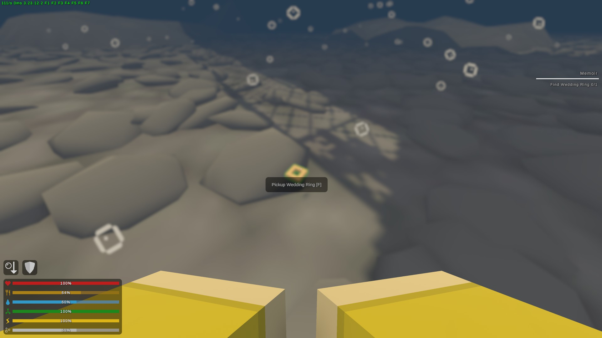
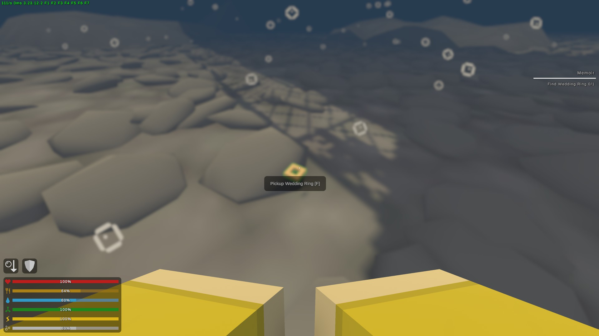

Memoir -- Russia
Gwen kaotas kogemata oma abielusõrmuse üle parda. Ta oleks väga tänulik, kui saaksite selle tagasi tuua, et tema abikaasat meenutada.
On vaja käja läbi Proua Gwen'i juurest et saada ülessane kätte, ning ta väidab et kokemata kukkus abielusõrmus vette. Tuleb ujuda Liberator'i all ning sõrmus leidub veepõhjas kivide peal.
Mida vaja
- Oskuspunkt -- "Diving".
pildid
 
